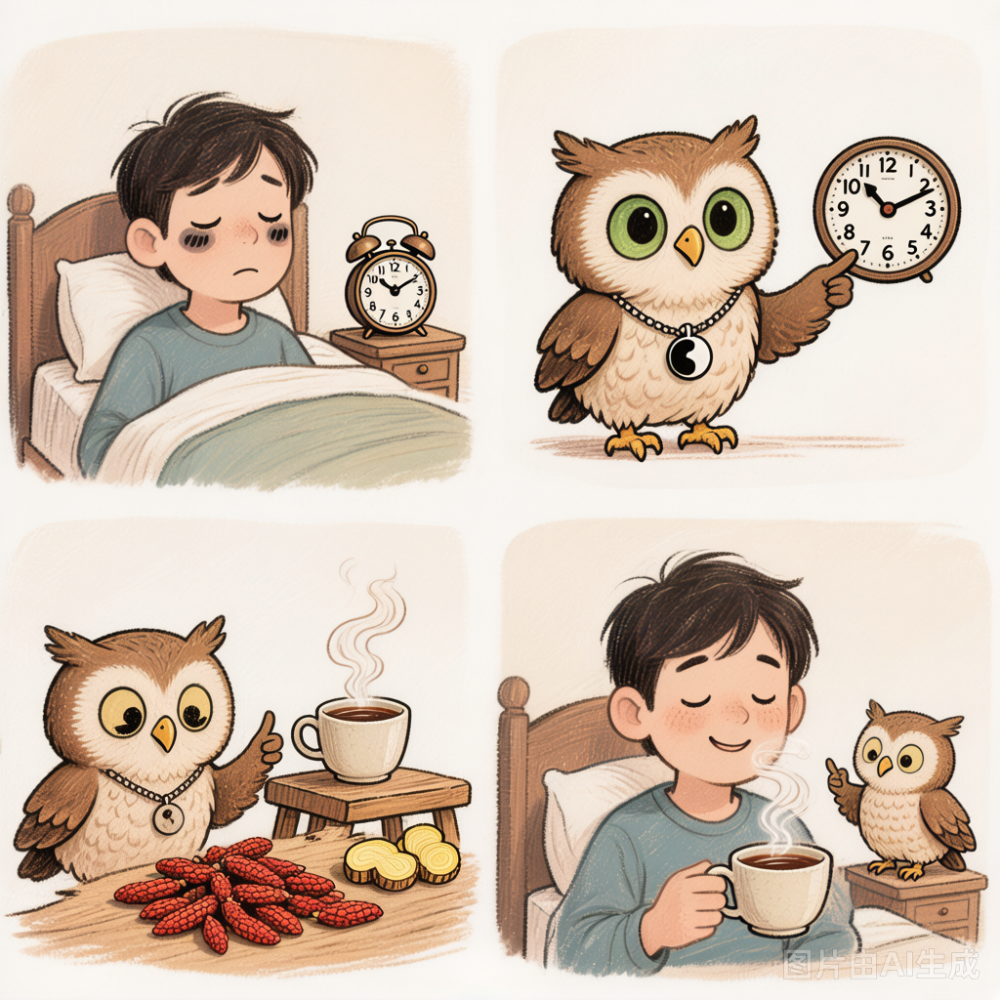

Why You're Exhausted Even After 8 Hours of Sleep
The Western answer usually goes like this: Better mattress. Less caffeine. More exercise. Maybe some melatonin. All reasonable. All occasionally helpful. But if you've tried them and still wake up feeling like a zombie, it might be time to hear what an ancient medical tradition has to say about your exhaustion.
Because here's the thing: Chinese medicine doesn't think sleep is just about hours. It thinks sleep is about what your organs were doing while you were lying there with your eyes closed.

The TCM Lens: Your Body Has a Night Shift
Traditional Chinese Medicine maps the body's functions to what's called the Organ Clock (子午流注 zi wu liu zhu). Each two-hour window corresponds to peak activity in a specific organ system. During sleep, your body isn't just "resting" — it's running maintenance cycles.
The Night Shift (Simplified)
1 AM – 3 AM — Liver: detoxification, blood renewal, emotional reset
3 AM – 5 AM — Lungs: breathing regulation, grief processing
5 AM – 7 AM — Large Intestine: elimination, letting go
Here's where it gets interesting. If you consistently wake up at the same time every night — say, 2:30 AM — that's not random. In TCM thinking, that's your Liver trying to get your attention. The Liver system (which in TCM is about much more than the physical organ) governs the smooth flow of Qi and blood. When it's stuck — usually from stress, frustration, or chronic anger — you get what TCM calls Liver Qi Stagnation.
And one of the classic symptoms? Waking up tired. Not because you didn't sleep enough, but because your body's overnight maintenance crew never clocked in.

The Other Culprit: Your Spleen Is Drowning
There's a second, equally common reason for waking up exhausted: Spleen Qi Deficiency. In TCM, the Spleen (with its partner the Stomach) is responsible for transforming food into usable energy — what we call Qi and Blood. It's your body's power plant.
And what damages the Spleen? A few very modern, very common things:
- Cold drinks with meals. The Spleen likes warmth. Ice water with your lunch is like throwing a bucket of cold water on a campfire.
- Eating irregularly. Skipping breakfast, then having a massive dinner at 9 PM. Your Spleen has a shift schedule and you're violating every labor law.
- Overthinking. In TCM theory, excessive mental work directly taxes the Spleen. If you spend all day in spreadsheets and Slack, your Spleen is filing overtime it never agreed to.
- Damp-producing foods. Dairy, sugar, fried foods, excessive raw/cold foods. These create what TCM calls "Dampness" — think of it as internal humidity that gums up the works.
What You Can Actually Do (Starting Tonight)
No philosophy essay here. Here's what to try, in order of least to most effort:
🍵 1. Warm Ginger Tea After Dinner
Slice 2–3 thin pieces of fresh ginger. Steep in hot water for 10 minutes. Drink it warm, not hot, about 30 minutes after your evening meal. Ginger warms the Spleen and Stomach, giving your digestive fire the fuel it needs to process dinner before you sleep. Do this for three nights in a row and see if your morning feels different.
❄️ 2. No Cold Drinks After 4 PM
This one is free and requires exactly zero ingredients. After 4 PM, everything you drink should be room temperature or warm. No ice. No refrigerated beverages. Your body is naturally cooling down as evening approaches — don't accelerate that process when your Spleen already struggles with cold.
💪 3. The "Great Rushing" Acupressure Point
On the top of your foot, in the webbing between your big toe and second toe, slide your finger about two finger-widths back toward your ankle. You'll find a tender spot. That's Liver 3 (太冲 Tai Chong) — the single most famous point for moving stagnant Liver Qi. Press firmly with your thumb for 30 seconds on each foot, twice a day. It might be tender. That's the point. (Literally.)
🥞 4. Cooked Breakfast, Not Cold Cereal
Your Spleen wakes up slowly. Hitting it with cold milk and raw granola first thing in the morning is like asking someone to run a marathon right after they open their eyes. Try warm oatmeal, congee (rice porridge), or even just a poached egg with steamed vegetables. Give your Spleen something warm to work with.
Your body isn't broken. It's been trying to tell you something, but nobody taught you its language.
Try one of these — just one — for the next three days. See what your body says back. Ollie will be here when you return.